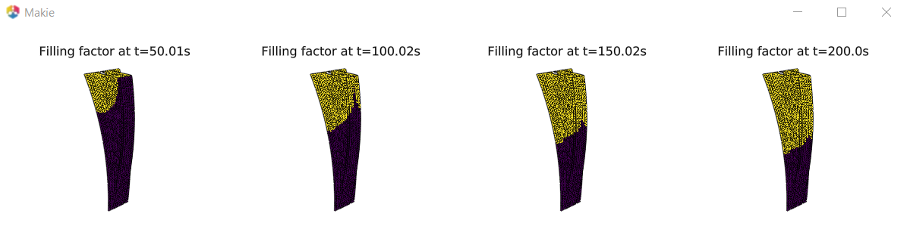
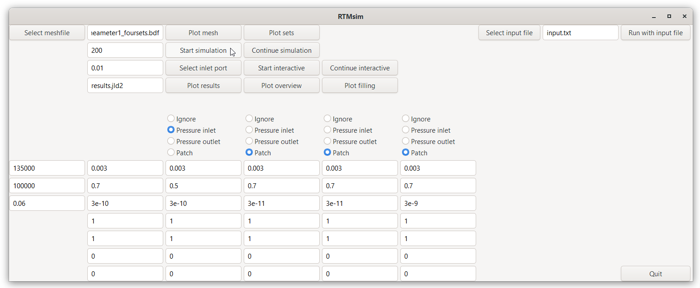
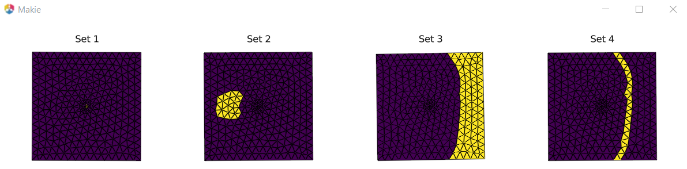
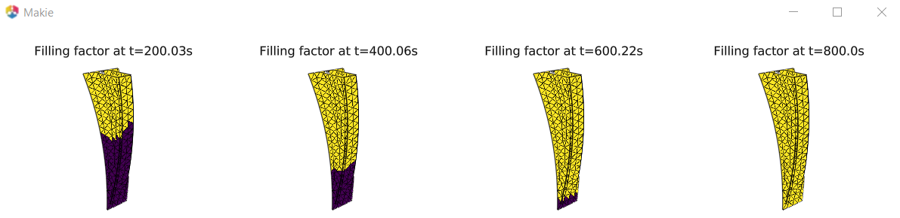
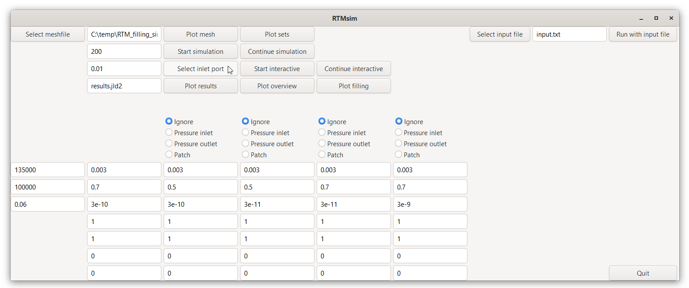

Tutorials
Validation and verification cases
Three different test cases are available, successfully validating the Julia implementation of the RTM filling model:
- Validation of the software tool for radial flow with isotropic in-plane permeablity: The simulated flow front position after 200 s is compared with the calculated flow front position from literature.
- Verification of the software tool for radial flow with tilted orthotropic in-plane permeablity: The simulated tilted elliptical flow front is analysed and the calculated orthotropic permeablity is compared with the simulation input.
- Comparison of the simulated flow front position for a complex annulus filler-like part with the simulated flow front position from Ansys Fluent and comparison of the simulated filling pattern with results from a myRTM simulation.
The validation and verification cases can be executed in the GUI with the buttons Run with input file and Plot overview or from the command line with
rtmsim.start_rtmsim("inputfiles\\input_case1_coarsemesh.txt")andrtmsim.plot_overview(-1,-1)on Windows andrtmsim.start_rtmsim("inputfiles/input_case1_coarsemesh.txt")andrtmsim.plot_overview(-1,-1)on Linux.
The input files for the validation cases are input_case1_coarsemesh.txt, input_case1_finemesh.txt, input_case2_coarsemesh.txt, input_case2_finemesh.txt, input_case3_coarsemesh.txt, input_case3_finemesh.txt. The input files are saved in directory inputfiles in the package folder. The appropriate file must be selected in GUI or in the function call.
The following passages show and explain the simulation results (after rotating the views with LMB) for the test cases.
V&V case 1
Results for coarse and fine mesh of case 1 (Preform size 0.6 x 0.6 x 0.003 m^3, central injection gate with 0.02 m diameter, 35000 Pa injection pressure, dynamic viscosity 0.06 Pas, porosity 0.7, isotropic permeablity 3e-10 m^2):


According to an analytical estimation, the flow front after 50, 100, 150 and 200 s is a circle with radius 0.114, 0.150, 0.178 and 0.200 m. The values for the fine mesh agree well with the results from the analytical formula. The values for the coarse mesh show an error of <15% which decreases significantly in the course of time but the shape is no smooth circle.
V&V case 2
Results for coarse and fine mesh of case 2 (Preform size 0.6 x 0.6 x 0.003 m^3, central injection gate with 0.02 m diameter, 35000 Pa injection pressure, dynamic viscosity 0.06 Pas, porosity 0.70, permeability 3.0e-10 m^2 in first principal direction 30° to the horizontal and permeability 1.5e-10 m^2 in second principal direction):


Analyzing the flow front after 200 s, the orthotropic permeability is described by 2.97e-10 m^2, 1.45e-10 m^2 and angle 35° for the fine mesh and 2.48e-10 m^2, 1.18e-10 m^2 and 35° for the coarse mesh. For the fine mesh (2198 cells for a domain with 600 × 600 mm), this reverse engineering shows very good agreement of the calculated orthotropic permeability with the values used as simulation input. For the coarse mesh (588 cells) the agreement is still acceptable.
V&V case 3
Results for coarse and fine mesh of case 3 (Bounding box of part is 0.4 x 0.15 x 0.1 m^3, part thickness is 0.003 m^3, injection gate at on end of the part, 35000 Pa injection pressure, dynamic viscosity 0.06 Pas, porosity 0.7, isotropic permeablity 3e-10 m^2):


If the position of inlet and outlet ports is investigated, simulations with a coarse mesh and consequently reduced computational time is sufficient since the flow front progagation is predicted properly. The actual filling time can only be predicted with a fine mesh. A mesh refinement study must be performed. With the coarse mesh it takes approximately 50 s longer to reach the same filling state. If the predicted filling with the fine mesh is considered correct, the error with the coarse mesh is approximately 20%. This is in good agreement with the results from case 1 where domain size, coarse and fine mesh are similar and the permeability and injection values are the same.
Use cases - Windows
The following three examples show typical use cases how RTMsim is used by engineers:
Use case 1
This examples shows how to start a simulation with the GUI. Click on Select meshfile and select the mesh file mesh_permeameter1_foursets.bdf from the meshfiles folder and set all other parameters as shown:

First, inspect the mesh file and plot the pre-defined sets:

Set 1 is the pressure inlet, set 2 and set 3 are reinforcement patches with lower permeability and set 4 is a racetracking channel between the main preform and set 3 with same porosity but a factor 10 higher permeability than the main preform (racetracking with higher permeablity=higher flow speed takes place in thin regions between different patches or at the preform boundary). Then start the simulation and plot the filling overview after 200 s simulation time:

Continue the simulation for another 100 s simulation time and plot the filling overview:

Use case 2
This example shows how to use outlet ports. If outlet ports are defined, the outlet ports are connected to the catch pot (typically at ambient pressure or evacuated). If no outlet ports are defined, the hoses to the catch pot are clamped. The simulation is started with the following settings (mesh file is mesh_annulusfiller1_inletandoutlet.bdf):

The result plot shows the completely filled part with the grey inlet and outlet ports and the pressure contour:

The filling overview is:

The filling overview without pressure outlet (select Ignore radio button for the second set, Start simulation, Plot overview) shows only small differences at the very end of the filling:
Use case 3
This example shows a workflow for selecting the inlet ports interactively. First, select the mesh file meshfiles\\mesh_annulusfiller1.bdf and plot the mesh to see the bounding box size of the part:

Specify the inlet port radius and press the Select inlet port button:

Rotate the view with the nodes with LMB and select an inlet port location with key p+LMB. After selection the node is highlighted:

Selection of multiple nodes is possible. Then close the graphics window and start the simulation with the settings shown above by clicking the Start interactive button. All radio buttons show ignore if only the interactively selected inlet is used. In general, sets defining different preform properties or additional inlet ports or outlet regions can also be used in interactive mode. Plot the filling overview:

If cascade injection is planned (additional inlet port which is activated just after the flow front reached this location), select two inlet ports after clicking the button Select inlet port. The first one at the same location as before and the second one at the end of the current position of the flow front:

Close the graphics window and continue the simulation with the button Continue interactive. The filling and the final pressure contour are:


Without cascade injection, the degree of filling is significantly lower as shown in the subsequent figure for a filling time of 400 s.

Use cases - Linux
Since the GUI for Linux is still under development, the steps of the presented use cases can be executed with the following list of commands in the Julia terminal.
Use case 1
This examples shows how to perform a simulation in the Julia terminal. First, inspect the mesh file and plot the pre-defined sets:
rtmsim.plot_sets("meshfiles/mesh_permeameter1_foursets.bdf")if filemesh_permeameter1_foursets.bdfis included in foldermeshfilesin the working directory.
Set 1 is the pressure inlet, set 2 and set 3 are reinforcement patches with lower permeability and set 4 is a racetracking channel between the main preform and set 3 with same porosity but a factor 10 higher permeability than the main preform (racetracking with higher permeablity=higher flow speed takes place in thin regions between different patches or at the preform boundary). Then start the simulation and plot the filling overview after 200 s simulation time:
rtmsim.rtmsim_rev1(1,"meshfiles/mesh_permeameter1_foursets.bdf",200, 101325,1.225,1.4,0.06, 1.35e5,1.00e5, 3e-3,0.7,3e-10,1,1,0,0, 3e-3,0.7,3e-10,1,1,0,0, 3e-3,0.7,3e-11,1,1,0,0, 3e-3,0.7,3e-11,1,1,0,0, 3e-3,0.7,3e-9,1,1,0,0, 1,2,2,2,0,"results.jld2",0,0.01,16)rtmsim.plot_overview(-1,-1)
Continue the simulation for another 100 s simulation time and plot the filling overview:
rtmsim.rtmsim_rev1(1,"meshfiles/mesh_permeameter1_foursets.bdf",100, 101325,1.225,1.4,0.06, 1.35e5,1.00e5, 3e-3,0.7,3e-10,1,1,0,0, 3e-3,0.7,3e-10,1,1,0,0, 3e-3,0.7,3e-11,1,1,0,0, 3e-3,0.7,3e-11,1,1,0,0, 3e-3,0.7,3e-9,1,1,0,0, 1,2,2,2,1,"results.jld2",0,0.01,16)rtmsim.plot_overview(-1,-1)
Use case 2
This example shows how to use outlet ports. If outlet ports are defined, the outlet ports are connected to the catch pot (typically at ambient pressure or evacuated). If no outlet ports are defined, the hoses to the catch pot are clamped. The simulation is started with the following settings:
rtmsim.rtmsim_rev1(1,"meshfiles/mesh_annulusfiller1_inletandoutlet.bdf",800, 101325,1.225,1.4,0.06, 1.35e5,1.00e5, 3e-3,0.7,3e-10,1,1,0,0, 3e-3,0.7,3e-10,1,1,0,0, 3e-3,0.7,3e-10,1,1,0,0, 3e-3,0.7,3e-11,1,1,0,0, 3e-3,0.7,3e-9,1,1,0,0, 1,3,0,0, 0,"results.jld2",0,0.01,16)
The result plot shows the completely filled part with the grey inlet and outlet ports and the pressure contour are created:
rtmsim.plot_results("results.jld2")
The filling overview is created:
rtmsim.plot_overview(-1,-1)
The filling overview without pressure outlet is:
rtmsim.rtmsim_rev1(1,"meshfiles/mesh_annulusfiller1_inletandoutlet.bdf",800, 101325,1.225,1.4,0.06, 1.35e5,1.00e5, 3e-3,0.7,3e-10,1,1,0,0, 3e-3,0.7,3e-10,1,1,0,0, 3e-3,0.7,3e-10,1,1,0,0, 3e-3,0.7,3e-11,1,1,0,0, 3e-3,0.7,3e-9,1,1,0,0, 1,0,0,0, 0,"results.jld2",0,0.01,16)rtmsim.plot_overview(-1,-1)
Use case 3
This example shows a workflow for selecting the inlet ports interactively. First, plot the mesh to see the bounding box size of the part:
rtmsim.plot_mesh("meshfiles/mesh_annulusfiller1.bdf",1)
Select the inlet ports in a graphics window:
rtmsim.plot_mesh("meshfiles/mesh_annulusfiller1.bdf",2)
Rotate the view with the nodes with LMB and select an inlet port location with key p+LMB. After selection the node is highlighted:
Selection of multiple nodes is possible. Then close the graphics window and start the simulation with the following settings:
rtmsim.rtmsim_rev1(1,"meshfiles/mesh_annulusfiller1_inletandoutlet.bdf",200, 101325,1.225,1.4,0.06, 1.35e5,1.00e5, 3e-3,0.7,3e-10,1,1,0,0, 3e-3,0.7,3e-10,1,1,0,0, 3e-3,0.7,3e-10,1,1,0,0, 3e-3,0.7,3e-11,1,1,0,0, 3e-3,0.7,3e-9,1,1,0,0, 0,0,0,0, 0,"results.jld2",1,0.01,16)
Plot the filling overview:
rtmsim.plot_overview(-1,-1)
If cascade injection is planned (additional inlet port which is activated just after the flow front reached this location), select two inlet ports. The first one at the same location as before and the second one at the end of the current position of the flow front:
rtmsim.plot_mesh("meshfiles/mesh_annulusfiller1.bdf",2)
Close the graphics window and continue the simulation with the button Continue interactive.
rtmsim.rtmsim_rev1(1,"meshfiles/mesh_annulusfiller1_inletandoutlet.bdf",200, 101325,1.225,1.4,0.06, 1.35e5,1.00e5, 3e-3,0.7,3e-10,1,1,0,0, 3e-3,0.7,3e-10,1,1,0,0, 3e-3,0.7,3e-10,1,1,0,0, 3e-3,0.7,3e-11,1,1,0,0, 3e-3,0.7,3e-9,1,1,0,0, 0,0,0,0, 1,"results.jld2",1,0.01,16)
The filling and the final pressure contour are:
rtmsim.plot_overview(-1,-1)
rtmsim.plot_results("results.jld2")
Without cascade injection, the degree of filling is significantly lower as shown in the subsequent figure for a filling time of 400 s.